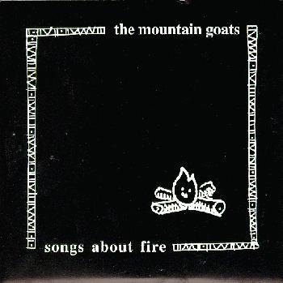

songs about fire

title: songs about fire
quote: in theory, if we who presently claim to be human were to
forget our efforts to find the traces of divine movements in our own
actions, our fate should be something like the people in popol vuh. for
them, the forgotten force of divinity reasserted itself by inhabiting
their own tools and utensils, which rose up against them and drove them
from their homes. today they are swinging through the trees. --dennis
tedlock
side 1:
pure gold
papagallo
side 2:
song for john davis
stars around her
please mail any questions/comments/complaints, or just notes hello to:nall@themountaingoats.net